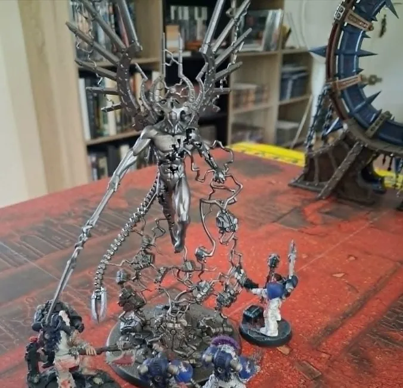
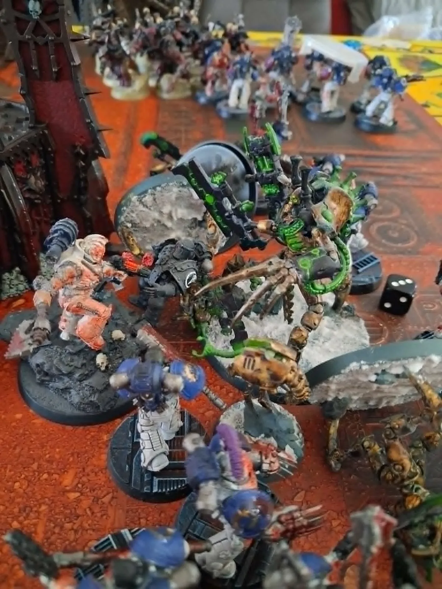

Défenseurs
World Eaters
- Khârn le Félon — 8e Capitaine
- 50 Berzerkers (équiv. demi-compagnie loyaliste)
- 3 Champions de Khorne — élus du dieu
Rapport de Bataille
Quand les morts-vivants xenos osèrent profaner le Conqueror, Khârn le Félon répondit par le seul langage que le dieu du sang comprend — la violence absolue.
Khârn le Félon mena cinquante Berzerkers à bord du Conqueror — l'équivalent d'une demi-compagnie. Leur ennemi n'était pas humain : une expédition nécron, téléportée par le Tétrarque qui commandait la force xenos, avait pris pied dans les couloirs du Conqueror avec un objectif clair — détruire le puissant vaisseau de la Légion.
Pour assurer leur victoire, les Nécrons avaient amené plus qu'un simple contingent guerrier : une Écharde de C'tan, fragment d'un dieu stellaire prisonnier dans un sarcophage de nécroderme. Ce C'tan, nommé le Dragon du Vide, étendait sa corruption sur tous les systèmes du navire — vox, auspex, machines-démons, cogitators — jusqu'à ce que Lotara, l'Esprit vivant du Conqueror, soit contrainte d'affronter l'entité sur le plan mental.
Deux cibles prioritaires avaient été identifiées par le Tétrarque : les cogitators de ciblage protégés derrière des batteries d'armes plasma, et l'une des arènes de combat du Temple de Khorne dissimulé dans les profondeurs du vaisseau. Le C'tan, se moquant ouvertement des dieux de l'immatérium, défia Khorne en humiliant ses fidèles sur ce sol sacré.
Défenseurs
Assaillants Xenos
— Rapport des dommages subis
Malgré la furie des Berzerkers et les efforts désespérés des World Eaters pour protéger les installations vitales du Conqueror, le sabotage des cogitators de visée et des systèmes d'artillerie plasma ne put être empêché. Le Dragon du Vide, opérant simultanément sur le plan mental aux côtés du contingent physique nécron, paralysa les défenses mécaniques avant que les World Eaters puissent intervenir.
La corruption du C'tan atteignit les vox, les auspex et les machines-démons du vaisseau — forçant même l'Esprit du Conqueror, la maitresse Lotara Sarrin dans sa forme éthérée, à livrer un combat purement mental contre l'entité cosmique pour préserver l'intégrité du navire.
Trois tours de combat dans l'arène sacrée à bord du Conqueror, sous le regard ardent du Dieu du Sang.
« Nul dieu de l'immatérium n'avait jamais vu l'un de ses temples profané ainsi sans riposter. Khorne observait. Et Khorne se souvenait. »
Premier Tour
Khorne bénit les World Eaters dès l'ouverture des hostilités : résistance aux coups et force physique accrues. Les berzerkers encaissent les tirs des Guerriers Nécrons et les assauts du Seigneur Skorpekh avec une endurance surhumaine. Les combats sont équilibrés — chaque camp tenant ses positions, les World Eaters absorbant les pertes par la pure grâce warp de leur dieu tandis que les Nécrons reconstituent leurs rangs par le Protocole de Résurrection.
Deuxième Tour
Le regard de Khorne se pose sur trois champions parmi les siens et sur Khârn lui-même. Touché par leurs exploits, le dieu du sang leur offre une semi-bénédiction-possession — une puissance warp brûlante qui galvanise corps et esprit au-delà de toute limite humaine ou posthumaine. La foudre voltaïque parcourt les flancs du Conqueror, faisant vibrer les plaques de blindage. C'est alors que l'Écharde se révèle pleinement : le Dragon du Vide manifeste sa présence physique dans l'arène, prêt à défier le dieu du sang sur son propre terrain sacré.
Troisième Tour
Khârn et l'Écharde de C'tan s'affrontent directement — et s'entre-tuent. Mais tous deux se relèvent. Le Dragon du Vide, immortel dans son enveloppe de nécroderme, retrouve cohérence en quelques instants. Khârn, lui, est relevé par la pure énergie warp de sa colère et par la volonté inflexible de Khorne lui-même. Le Temple est ravagé, les champions cèdent du terrain face à la pression nécron, et les forces semblent basculer vers l'irrémédiable.
Alors, dans un dernier acte de furie absolue, le fidèle Huitième Capitaine abat le fragment du dieu stellaire de sa hache — Gorechild s'enfonçant dans le nécroderme là où nul autre n'aurait pu frapper. Le Dragon du Vide est dissous. L'arène appartient à Khorne.


Le Temple est souillé mais tenu. Le sabotage nécron aura laissé des séquelles durables sur les systèmes d'artillerie du Conqueror. Pourtant, l'essentiel est préservé : le Conqueror navigue encore. Et l'Écharde du Dragon du Vide ne se reformera pas — Khârn en a décidé ainsi. Khorne grave les noms des champions dans le métal même du vaisseau, et la rage continue de brûler.